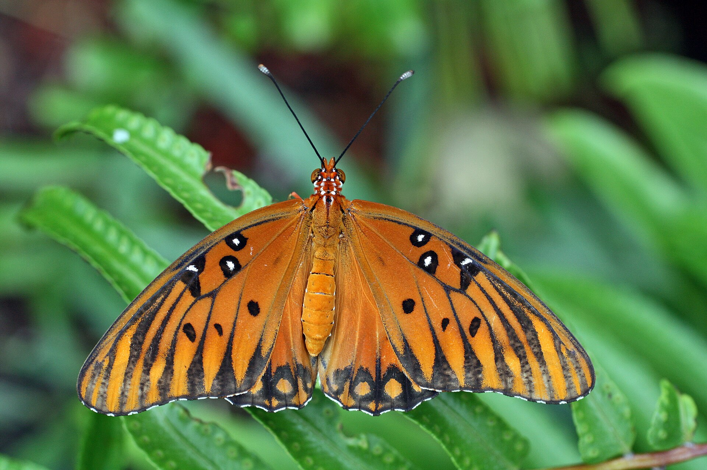
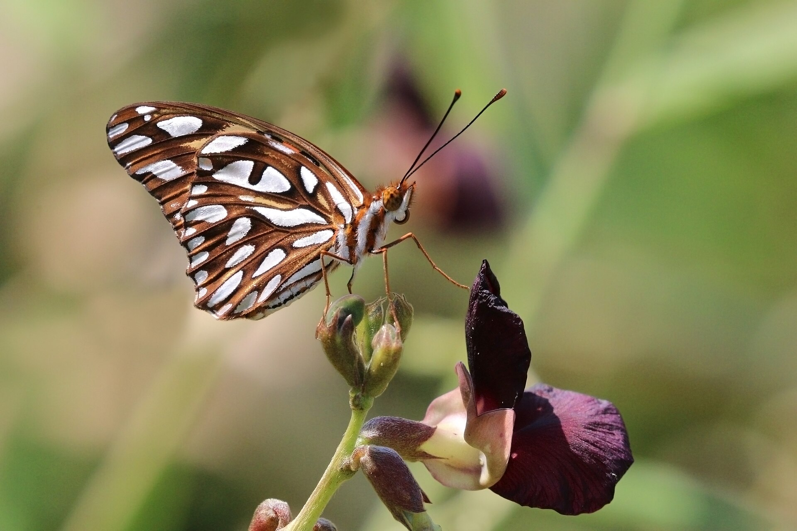
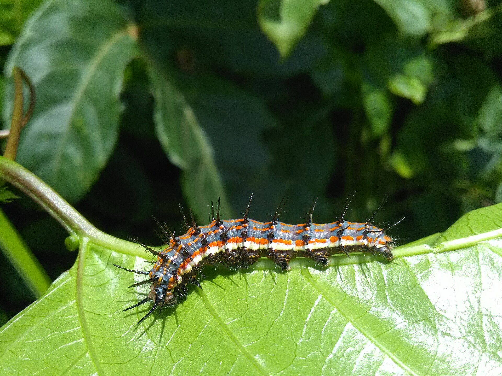

Agraulis vanillae
Common nowPassionvine is still going, and late summer is when this species builds up before the fall push south. If you have corkystem or maypop, you are looking at its kitchen.


Yards, weedy lots, parks, roadsides.
Corkystem passionflower
Passiflora suberosapurple passionflower / maypop
Passiflora incarnatayellow passionflower
Passiflora luteaJulia is plainer orange and has no silver spots underneath. Gulf Fritillary is silver-spotted below.
Year-round here, plus a real late-summer and fall pulse into the peninsula. Peak months August–October.